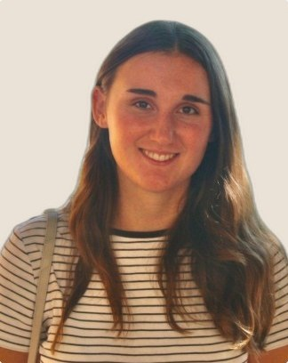

01
Needfinding
Ottobre 2026
7 interviste (5 utenti target, di cui 2 estremi, e 2 esperte) e un questionario con 408 risposte sulle abitudini di abbigliamento. Ne emergono 7 bisogni e le prime idee.
Fondamenti di HCI · Politecnico di Milano
Un nuovo look senza stravolgere il guardaroba: riscoprire e combinare i vestiti che si hanno già, comprare in modo consapevole e dare una seconda vita ai capi inutilizzati.
Il progetto
Aprire un armadio pieno e non trovare nulla capita a quasi tutti. Spesso non mancano i vestiti: manca una visione d’insieme. Relook la offre e accompagna tre momenti.
Outfit pronti con i capi disponibili, in base a meteo, capi a lavare, occasione e dress code.
Prima dell’acquisto: hai già qualcosa di simile? Con cosa si abbinerà?
I capi fermi da tempo tornano negli outfit o vengono venduti, donati o regalati.
Consegne
Ottobre 2026
7 interviste (5 utenti target, di cui 2 estremi, e 2 esperte) e un questionario con 408 risposte sulle abitudini di abbigliamento. Ne emergono 7 bisogni e le prime idee.
Ottobre 2026
Due focus group, quattro personas con i loro scenari, brainstorming e votazione delle soluzioni, nome e value proposition.
Scadenza 16 novembre 2026
Tre task con HTA e TDH, uno storyboard a fumetto e due prototipi low-fidelity: app mobile e agente conversazionale. Scelta finale: l’app mobile.
Il gruppo

Giulia Brivio